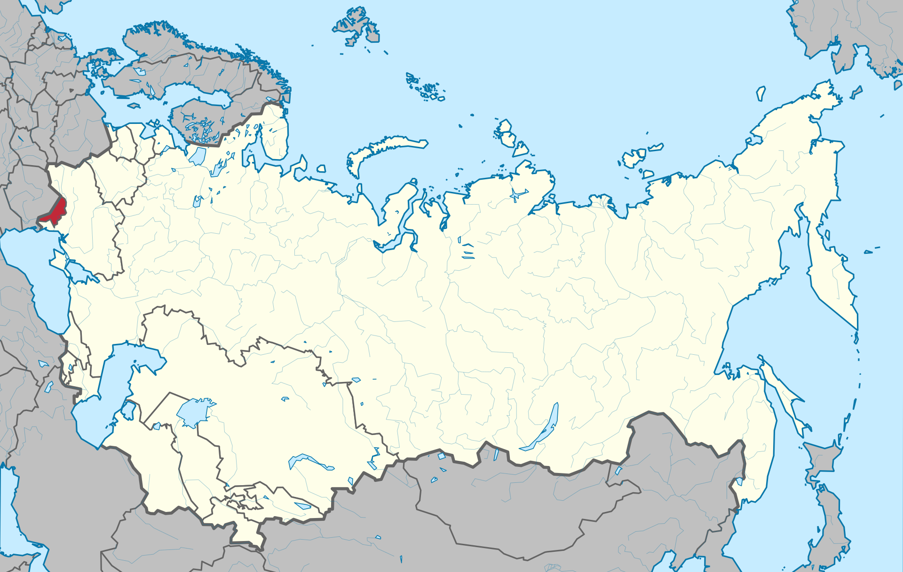

РЕСПУБЛИКИ СССР
ГИМН СССР
ВАЛЮТЫ СССР
РЕСПУБЛИКИ СССР
ГИМН СССР
ВАЛЮТЫ СССР
Что такое АССР
АССР
Молда́вская Сове́тская Социалисти́ческая Респу́блика (Молдавская ССР, МССР, молд. Република Советикэ Сочиалистэ Молдовеняскэ, совр. Republica Sovietică Socialistă Moldovenească) — одна из республик Союза Советских Социалистических Республик (2 августа 1940 — 27 августа 1991). Располагалась на крайнем юго-западе Европейской части СССР. На западе граничила с Румынией, на востоке, севере и юге — с Украинской ССР. Площадь 33,7 тыс. км². Население 4337 тыс. чел. (1989). Столица — город Кишинёв. С 5 июня 1990 года официально называлась Советская Социалистическая Республика Молдова (ССР Молдова, RSS Moldova).
Важные города (тыс. жителей, 1989): Кишинев (667,1), Тирасполь (181,9), Бельцы (158,5), Бендеры (130,0). За годы Советской власти из бывших сёл и небольших местечек выросли города Рыбница, Унгены, Единцы, Флорешты, Комрат, Чадыр-Лунга.
Карта АССР c 29 ноября 1920 года — 23 августа 1990 года
[ОБРАТНО НА ГЛАВНУЮ] [ОБРАТНО К РЕСПУБЛИКАМ]